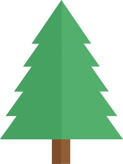
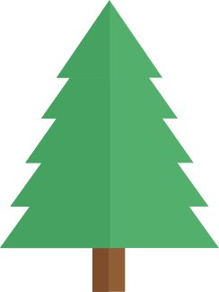
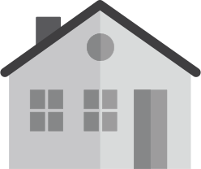
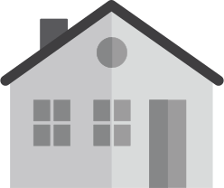

Välkommen till smart med mat
En version anpassad för mobil och läsplatta är under utveckling och kommer att lanseras inom ett par dagar. Under tiden rekommenderar vi att du besöker sajten med en dator.
En version anpassad för mobil och läsplatta är under utveckling och kommer att lanseras inom ett par dagar. Under tiden rekommenderar vi att du besöker sajten med en dator.


 



 

Nästan allt som blir över när du lagar mat plus oätliga matrester är matavfall som ska slängas i den bruna matavfallspåsen. Gamla pizzakanter, sega sega råttor och ruttna tomater – allt det kan omvandlas till värdefull energi.


För att kunna göra biogas, värme och el av matresterna som du sorterar måste matavfallet behandlas i en biogasanläggning. Det som händer där är samma sak som sker i din mage. I magen blir det fis och bajs – i biogasanläggningen, biogas och gödsel.


Eftersom jordens resurser är begränsade är det viktigt att hushålla med dem på ett hållbart sätt – för vår egen skull och för kommande generationer. Vi slänger en miljon ton mat om året i Sverige. Att göra biogas och biogödsel av matavfall är väldigt bra men minskat matsvinn är ännu bättre.

De flesta i Sverige har börjat sortera sitt matavfall. Genom att slänga mindre och samla in det som inte går att äta, typ möglig broccoli, kan vi få en renare och bättre värld. Här får du koll på hur – i tre munsbitar! Det börjar med sortering. Del två handlar om biogasfabriken. I sista delen får du fundera över hur vår hantering av mat påverkar miljön. Trevlig matavfallsresa!

 DEL 1VAD ÄR
DEL 1VAD ÄR DEL 2VAD HÄNDER MED
DEL 2VAD HÄNDER MED DEL 3VI KAN PÅVERKA
DEL 3VI KAN PÅVERKA